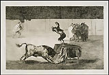

| |
The collection of
old master drawings and prints is one of the greatest in the world.
There are magnificent groups of drawings by Leonardo da Vinci, Raphael,
Michelangelo (including his only surviving full-scale cartoon), Dürer,
Rubens, Rembrandt, Claude and Watteau, and virtually complete collections
of the works of all the great printmakers including unsurpassed holdings
of prints by Dürer, Rembrandt and Goya. More than 30,000 British drawings
and watercolours include important examples work by Hogarth, Sandby,
Turner, Girtin, Constable, Cotman, Cox, Gillray, Rowlandson and Cruikshank,
as well as all the great Victorians. There are about a million British
prints including more than 20,000 satires and outstanding collections
of works by William Blake and Thomas Bewick. The modern collection is
less comprehensive, but includes major collections of French lithographs
of the post-Impressionist period, German Expressionist, British, American
and Scandinavian prints, Henry Moore's Shelter Sketchbook and
prints by Picasso and his contemporaries in 20th-century Paris.
Underpinning these
masterpieces are lesser-known works of great interest: over 100 15th-century
niello plates; a group of 75 watercolours by John White (active 1585-93),
which are some of the earliest European views of America; 1,000 botanical
collages by the 18th-century ‘blue-stocking' Mary Delany; nearly 1400
watercolours of everyday life in London by the German artist George
Scharf who settled here after the Battle of Waterloo. There are hundreds
of thousands of prints reproducing paintings made from the 16th-century
up until the era of photography; tens of thousands of engraved portraits;
large documentary collections of historical prints and topography (including
the Crace collection of more than 6,166 views of London) and important
collections of printed ephemera, such as trade and visiting cards, fans,
bookplates, playing cards and toy-theatre prints.
1
- 2
2 of 2
|
|

Francisco Goya, Otra Locura suya en la misma plaza (Another manoeuvre
in the same ring), etching, 1816
|
|
|
|